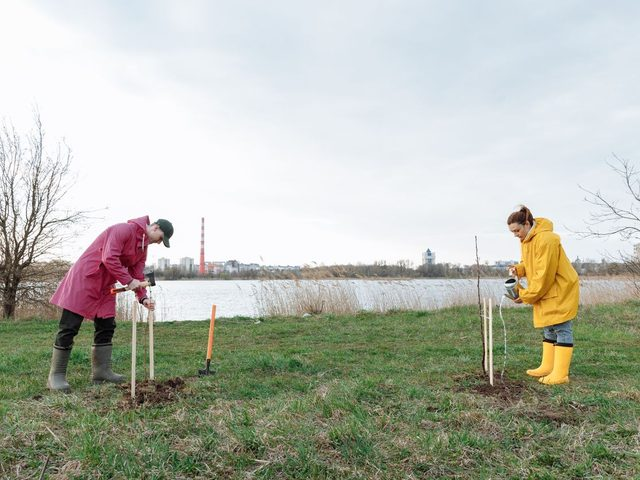
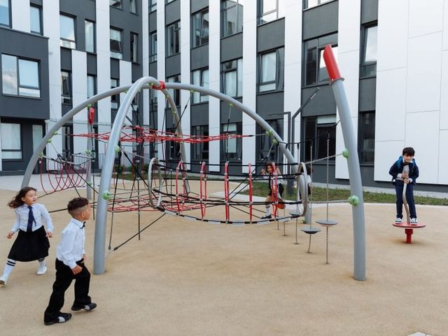

VOCABULARY · WORD UP 單字複習 UNIT 35
P-II．P 開頭（二）
WORD UP「P-II」的 41 個字（pepper 到 pleased）。紅色＝要複習，藍色標籤＝WORD UP 標熟記、還要在這裡考對。
共 41 個單字．點 🔊 聽發音

1peppern.
胡椒；辣椒
Add some salt and pepper.加點鹽和胡椒。
2perfectadj.
完美的
Nobody is perfect.沒有人是完美的。
3perhapsadv.
也許
= maybe
Perhaps he is busy.也許他很忙。
4periodn.
期間；一段時間；句點
We had a long period of rain.我們經歷了很長一段雨季。

5personn.
人
複數 people
She is a kind person.她是個善良的人。
6personaladj.
個人的；私人的
This is my personal diary.這是我的私人日記。

7petn.
寵物
keep a pet 養寵物
Do you have any pets?你有養寵物嗎？
8Philippinesn.
菲律賓
the Philippines
Manila is in the Philippines.馬尼拉在菲律賓。

9phonen./v.
電話；打電話
Can I use your phone?我可以用你的電話嗎？

10photon.
照片
= photograph；複數 photos
Let's take a photo together.我們一起拍張照吧。

11photographn.
照片
This photograph was taken in 1990.這張照片是 1990 年拍的。
12photographern.
攝影師
The photographer took pictures of the wedding.攝影師拍了婚禮的照片。

13physicsn.
物理
單數
Physics is hard but interesting.物理很難但很有趣。

14pickv.
挑選；摘
pick up 撿起、接人
Mom will pick me up after school.媽媽放學會來接我。

15picnicn.
野餐
have a picnic
Let's have a picnic in the park.我們去公園野餐吧。
16picturen.
圖片；照片
take a picture 拍照
Draw a picture of your family.畫一張你家人的圖。

17pien.
派
Grandma baked an apple pie.奶奶烤了一個蘋果派。
18piecen.
一片；一塊
a piece of + 不可數名詞
Can I have a piece of cake?我可以吃一塊蛋糕嗎？

19pign.
豬
The pig is rolling in the mud.豬在泥巴裡打滾。

20pigeonn.
鴿子
Pigeons are walking in the square.鴿子在廣場上走來走去。

21pilen.
一堆
a pile of
There is a pile of books on the desk.桌上有一堆書。

22pillown.
枕頭
I need a soft pillow.我需要一個軟枕頭。

23pinn.
別針；大頭針
She wore a pin on her coat.她外套上別了一個胸針。

24pineapplen.
鳳梨
Pineapple cakes are famous in Taiwan.鳳梨酥在台灣很有名。
25pinkadj./n.
粉紅色的
She has a pink bag.她有一個粉紅色包包。

26pipen.
管子；煙斗
Water runs through the pipe.水流過管子。

27pizzan.
披薩
Let's order a pizza.我們點個披薩吧。

28placen./v.
地方；放置
take place 舉行、發生
The concert will take place in the park.音樂會將在公園舉行。

29plainadj./n.
簡單的；樸素的；平原
She wore a plain white T-shirt.她穿一件素色白 T 恤。

30plann./v.
計畫
過去式 planned；plan to V
What are your plans for the weekend?你週末有什麼計畫？

31planen.
飛機
by plane
We went to Japan by plane.我們搭飛機去日本。

32planetn.
行星
Earth is our planet.地球是我們的星球。

33plantn./v.
植物；種植
Water the plants every day.每天幫植物澆水。

34platen.
盤子
Put the food on the plate.把食物放在盤子上。

35platformn.
月台；平台
The train is at Platform 2.火車在第二月台。

36playv./n.
玩；演奏；戲劇
play + 球類／play the + 樂器
Let's play basketball.我們去打籃球吧。

37playern.
選手；播放器
He is the best player on the team.他是隊上最好的球員。

38playgroundn.
遊樂場；操場
The kids are on the playground.孩子們在操場上。
39pleasantadj.
令人愉快的
We had a pleasant trip.我們的旅行很愉快。

40pleaseadv./v.
請；使高興
Please be quiet.請安靜。
41pleasedadj.
（人）高興的；滿意的
be pleased with
Mom was pleased with my grades.媽媽對我的成績很滿意。
FOCUS
重點整理
| 說法 | 中文 | 例子 |
|---|---|---|
| pick up | 撿起；接（人） | pick up the trash ／ pick me up |
| take place | 舉行；發生 | The game takes place on Friday. |
| a piece of / a pile of | 一片 ／ 一堆 | a piece of paper ／ a pile of clothes |
| plan to V | 計畫做… | plan to travel |
| pleasant / pleased | 令人愉快的 ／ 人感到高興的 | a pleasant day ／ I'm pleased. |
| plane / planet / plant | 飛機 ／ 行星 ／ 植物 | by plane ／ the planet ／ a plant |
| have a picnic | 野餐 | have a picnic by the river |
person 的複數是 people；physics 雖然有 s，但當單數用。